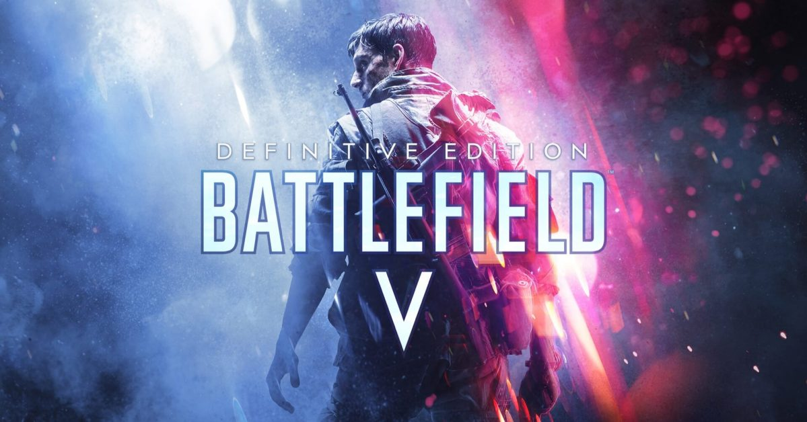
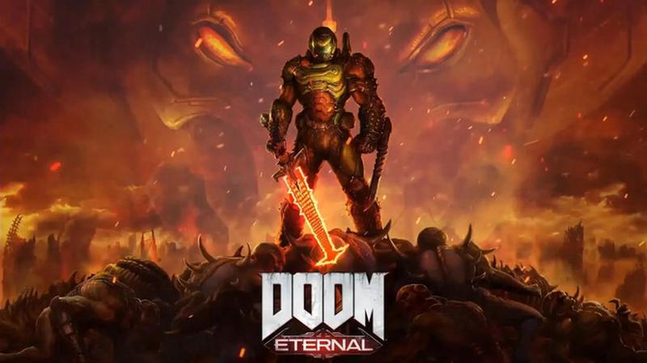

GryPC.PL
GryPC.PL
FPS
Strzelanka pierwszoosobowa, FPS z angielskiego first-person shooter to gatunek gier komputerowych skoncentrowanych na walce z przeważającym zastosowaniem broni palnej, których akcja obserwowana jest z perspektywy pierwszej osoby. Innymi słowy, gracz doświadcza akcji oczami głównego bohatera, który zazwyczaj widzi tylko ręce i broń postaci, natomiast pozostałe części ciała widoczne są tylko na filmach objaśniających fabułę. Strzelanka pierwszoosobowa jako gatunek ma podobne cechy jak inne strzelanki, które stanowią zarazem część gatunku gier akcji. Broń innego rodzaju niż palna również jest w niej używana, ale jej znaczenie jest zwykle drugorzędne.
Pare przykładów:

"Battlefield V" to strzelanka pierwszoosobowa, stworzona przez firmę EA DICE. Tytuł został wydany przez Electronic Arts 20 listopada 2018 na platformę Microsoft Windows, PlayStation 4 i Xbox One. Jest to szesnasta odsłona Battlefielda w historii serii. Akcja gry została osadzona w realiach II wojny światowej, a rozgrywkę w kampanii, podobnie jak w poprzedniej części, zaprezentowano z punktu widzenia kilku różnych bohaterów.
Odbiór gry w wersji przedpremierowej był mieszany, a zwiastun zapowiadający wywołał negatywną reakcję niektórych fanów serii na przedstawienie wielu elementów niezgodnie z historią. Po wydaniu Battlefield V otrzymał ogólnie pozytywne recenzje od krytyków, był chwalony za rozgrywkę i nowe tryby dla wielu graczy, ale skrytykowany za brak zawartości w momencie premiery i brak innowacji. Gra sprzedała się w 7,3 miliona egzemplarzy do końca 2018 roku, ale była komercyjnym rozczarowaniem dla Electronic Arts.
23 kwietnia 2020 roku ogłoszono, że wsparcie dla gry potrwa do lata 2020 roku, kiedy gra otrzyma ostatnią dużą aktualizację.
Odbiór gry w wersji przedpremierowej był mieszany, a zwiastun zapowiadający wywołał negatywną reakcję niektórych fanów serii na przedstawienie wielu elementów niezgodnie z historią. Po wydaniu Battlefield V otrzymał ogólnie pozytywne recenzje od krytyków, był chwalony za rozgrywkę i nowe tryby dla wielu graczy, ale skrytykowany za brak zawartości w momencie premiery i brak innowacji. Gra sprzedała się w 7,3 miliona egzemplarzy do końca 2018 roku, ale była komercyjnym rozczarowaniem dla Electronic Arts.
23 kwietnia 2020 roku ogłoszono, że wsparcie dla gry potrwa do lata 2020 roku, kiedy gra otrzyma ostatnią dużą aktualizację.

"Counter-Strike: Global Offensive" (CS:GO) to wieloosobowa strzelanka pierwszoosobowa, stworzona oraz wydana przez Valve Corporation i Hidden Path Entertainment, które już wcześniej pracowały nad "Counter-Strike: Source". Jest to czwarta gra z serii Counter-Strike, wydana na platformy Microsoft Windows, macOS, Xbox 360 i PlayStation 3 21 sierpnia 2012 i na Linuxa 23 września 2014[5][6][7].
W grze do walki stają dwie drużyny: terroryści i antyterroryści[13][14][15]. Zadaniem każdej z nich jest eliminacja drużyny przeciwnej lub wykonanie określonego zadania[14]. W przypadku terrorystów jest to podłożenie bomby lub obrona zakładników, zaś w przypadku antyterrorystów ochrona strefy detonacji przed podłożeniem bomby lub uratowanie zakładników. W grze występuje wiele różnych trybów, z których każdy ma odrębne cechy charakterystyczne.
CS:GO oprócz wbudowanego systemu matchmakingu, pozwalającego graczom na rozgrywkę na dedykowanych serwerach Valve, ma również możliwość tworzenia i rozgrywki na serwerach społeczności z niestandardowymi mapami i trybami gry. Od momentu wydania, CS:GO jest jedną z najpopularniejszych strzelanek pierwszoosobowych rozgrywanych w ramach sportu elektronicznego. Najważniejszymi turniejami są tzw. „majory”, zawody sponsorowane przez wydawcę gry, Valve.
Gra zyskała dość pozytywne recenzje krytyków. Chwalono ją za całokształt rozgrywki i wierność jej odwzorowania w stosunku do poprzednich części serii. Krytykowano niektóre z początkowych funkcji gry. Wersje konsolowe otrzymały pozytywne opinie, a recenzenci uważali, że istnieją wyraźne różnice między wersjami konsolowymi a wersją PC.
W grze do walki stają dwie drużyny: terroryści i antyterroryści[13][14][15]. Zadaniem każdej z nich jest eliminacja drużyny przeciwnej lub wykonanie określonego zadania[14]. W przypadku terrorystów jest to podłożenie bomby lub obrona zakładników, zaś w przypadku antyterrorystów ochrona strefy detonacji przed podłożeniem bomby lub uratowanie zakładników. W grze występuje wiele różnych trybów, z których każdy ma odrębne cechy charakterystyczne.
CS:GO oprócz wbudowanego systemu matchmakingu, pozwalającego graczom na rozgrywkę na dedykowanych serwerach Valve, ma również możliwość tworzenia i rozgrywki na serwerach społeczności z niestandardowymi mapami i trybami gry. Od momentu wydania, CS:GO jest jedną z najpopularniejszych strzelanek pierwszoosobowych rozgrywanych w ramach sportu elektronicznego. Najważniejszymi turniejami są tzw. „majory”, zawody sponsorowane przez wydawcę gry, Valve.
Gra zyskała dość pozytywne recenzje krytyków. Chwalono ją za całokształt rozgrywki i wierność jej odwzorowania w stosunku do poprzednich części serii. Krytykowano niektóre z początkowych funkcji gry. Wersje konsolowe otrzymały pozytywne opinie, a recenzenci uważali, że istnieją wyraźne różnice między wersjami konsolowymi a wersją PC.

"Doom" to seria strzelanek pierwszoosobowych stworzona przez id Software. Każda część koncentruje się na bezimiennym marine działającym z ramienia Union Aerospace Corporation (UAC) i walczącym z hordami demonów i nieumarłych.
Pierwsza część serii, wydana w 1993 roku, uznawana jest za pioniera gier FPS, chociaż tytuły reprezentujące ten gatunek powstawały już wcześniej. Tym niemniej Doom był jedną z pierwszych gier na komputerach osobistych oferujących grafikę 3D, poruszanie się w trzech wymiarach, wsparcie dla tworzonych przez graczy modyfikacji oraz grę wieloosobową przez sieć.
Od momentu premiery pierwszej części seria doczekała się kilku kontynuacji, rozszerzeń oraz filmu kinowego.
Pierwsza część serii, wydana w 1993 roku, uznawana jest za pioniera gier FPS, chociaż tytuły reprezentujące ten gatunek powstawały już wcześniej. Tym niemniej Doom był jedną z pierwszych gier na komputerach osobistych oferujących grafikę 3D, poruszanie się w trzech wymiarach, wsparcie dla tworzonych przez graczy modyfikacji oraz grę wieloosobową przez sieć.
Od momentu premiery pierwszej części seria doczekała się kilku kontynuacji, rozszerzeń oraz filmu kinowego.